Introduction
In myprevious Blog, I have introduced the Convolutional Neural Network approach for image classification. In this blog, we will try a more chalenging dataset and compare the performance between multiples model.
Dataset preparation
We use the Wild Animal Dataset from Kaggle where we have images from 6 animals. In the dataset, the author already rescaled the images for us to multiple resolutions. However, we can do it while loading the data. We use the image in 300x300 dpi for our model. I also found out that there are two images in Hynea/00000224_300resized.png and Chetah/00000244_300resized.png which are broken. We need to manually remove it to avoid later errors. 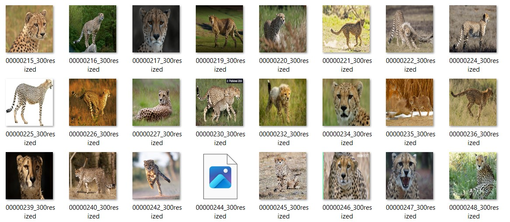
After that, we will upload the dataset to google drive and mount the drive to Google Colab for model building. 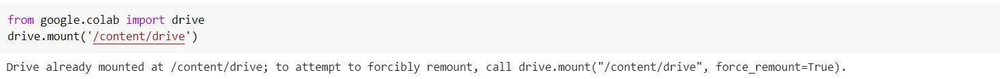We divide the data to training, validating and testing dataset with the ratio of 6:2:2 as common practice.
Convolutional Neural Network
The first approach is using Convulutional Neural Network which has been used widely for image classification. I tried with the model as in previous blog. 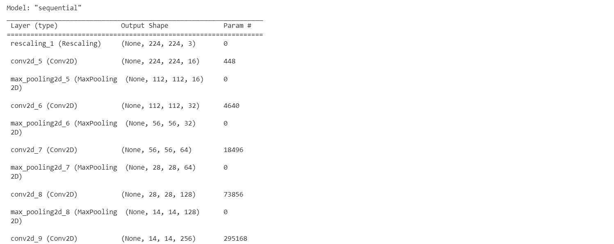 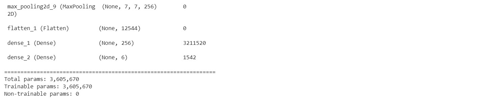
The performance is really bad with the accuracy of 62.91%. While looking at the loss function, we see that the model is overfitted to the training set. 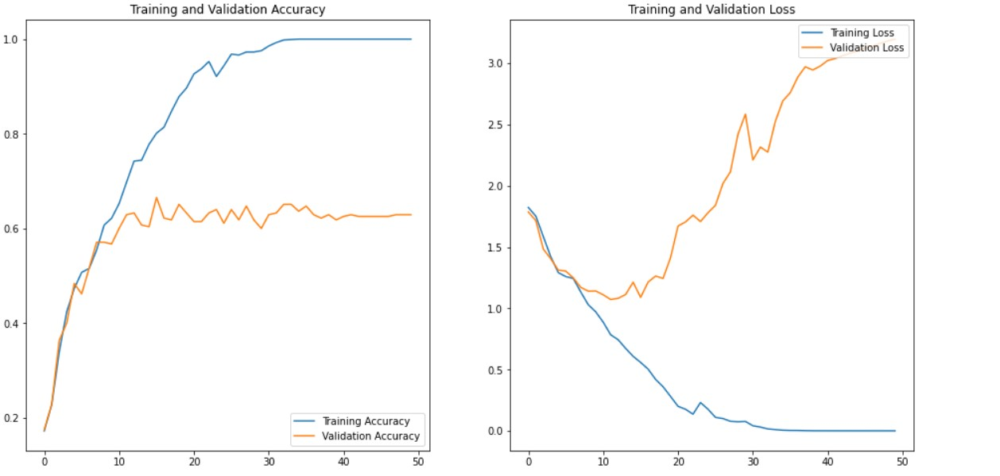
Training accuracy is always 100% while the validating accuracy is conversed to 0.6. Furthermore, while looking at loss graph, the validation lossfunc is increasing as the increase of epoch. This is clearly the overfitting problem. To overcome this problem, we now use the Data Augumentation technique to increase the training dataset as well as increase the randomness of the images. We will embed the data augumentation layer to the model so that the training data will be randomly distributed during training phase which can reduce the overfitting. 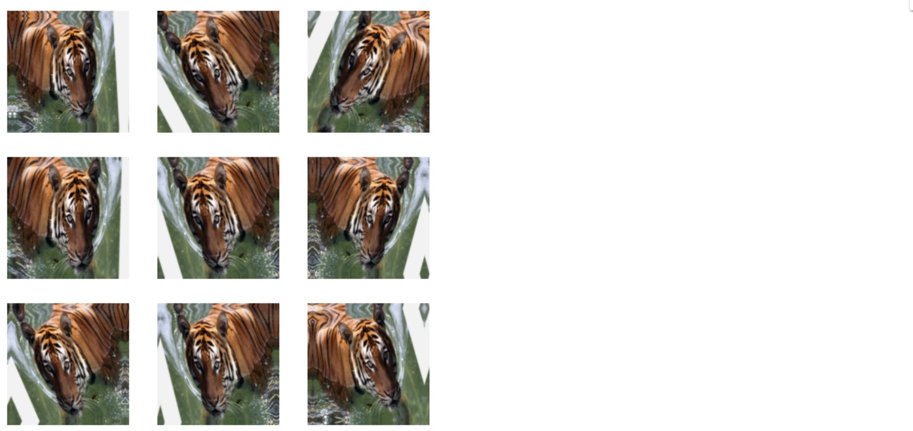
After using the augumentation technique, we can retrain the model and see that the overfitting phenomenon reduce while the accuracy can go up to 70% 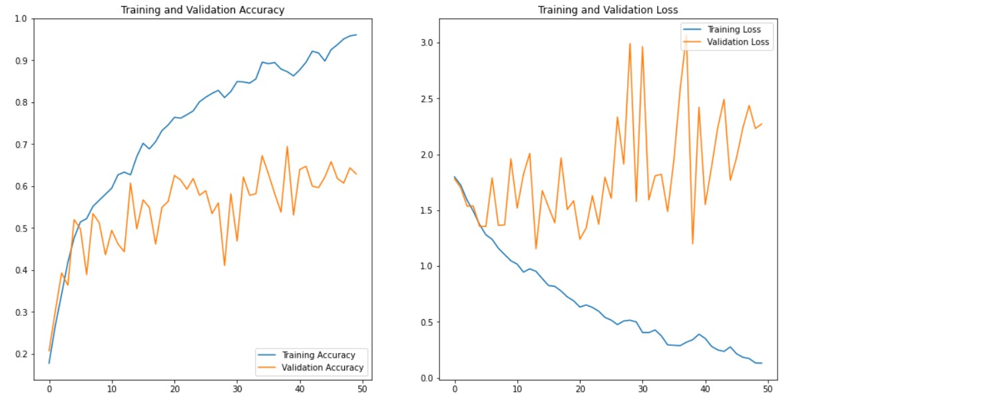Hyperparameter tuning
After spending time to tune hyperparameters such as epoch, batch size, adding layers to models, I got the final model 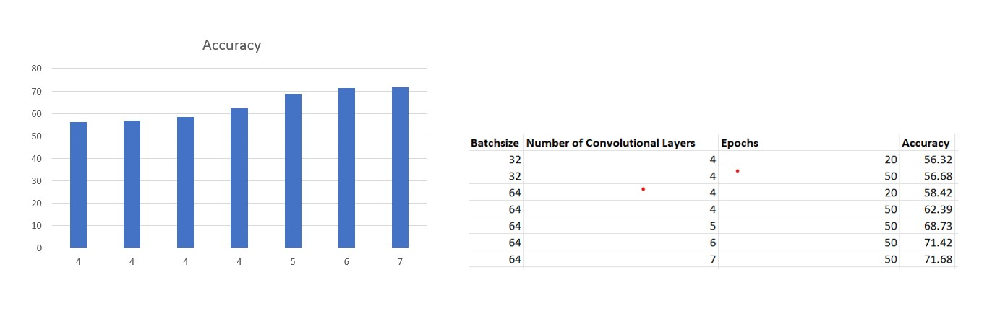As you can see, the more Convolutional layers we add into the model, the more accuracy the model performs on validating dataset. This will infer that our dataset is much more complex than previous example that the model need to me more complicated to predict well. Furthermore, the accuracy also increases while increasing the batchsize, this is explained why the more batchsize, the better learning phase is because the model will also learn the relationship between samples in one batch.
Dimentionality Reduction using Principal Component Analysis
For other techniques such as K-Nearest Neighbor, Support Vector Machine or Random Forest, we have to extract features from the images by ourselves to reduce the computational cost and remove the unimportant features. There are several ways to extract features from a given dataset. In this tutorials, I will use Principal Component Analysis which are widely used in several applications. Principal Component Analysis based on Singular Value Decomposition of the data to project it to a lower dimentional space [].
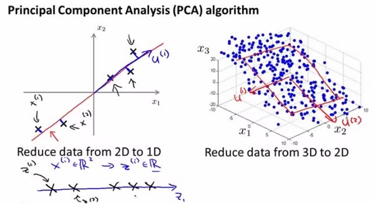Image Source: Machine Learning Lectures by Prof. Andrew NG at Stanford University
With PCA transformation, we will retrive the most informative features (calculated by the PCA score) which would be meaningful to differentiate the images. However, the number of features will be constrained by the number of samples in our dataset. I will use 512 features in this tutorial.
K-Nearest Neighbor
K-Nearest neighbor is the regressive algorithm based on the distance between the test samples with the k-nearest samples from each class.

Source: https://www.javatpoint.com/k-nearest-neighbor-algorithm-for-machine-learning
To evaluate the performance of K-nearest neighbor algorithm, I run the KNN model with k-value ranging from 2 to 20 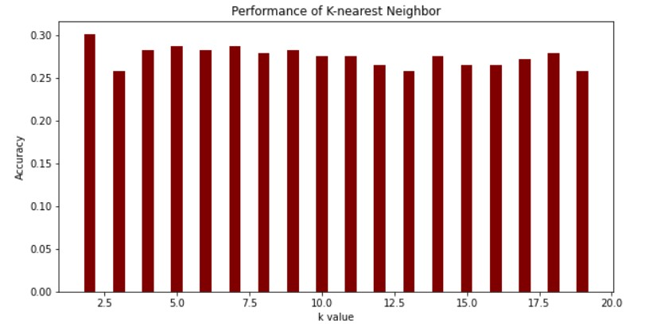
The performance is really bad (only around 30%). I also run without the dimentional reduction to see how it performs. 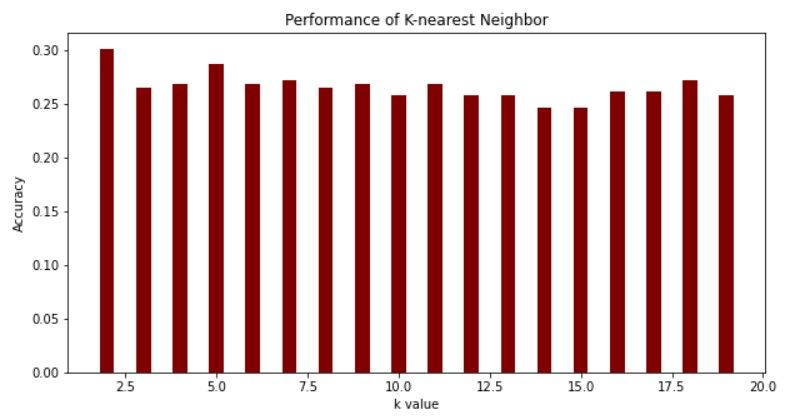As you can see in the figures above, the performance of the two data is not much different, but dimentional reduction reduce compotational cost alot because they remove all the non-informative features.
Random Forest Classifier
We all know about the decision tree in Data Mining. Let's apply the random forest classifier to this problem. Random Forest Classifier contains multiples decision trees with the predefined number of trees. The output will be the class selected by the most decision trees.

We also evaluate the performance of Random Forest Classifier with various configuration
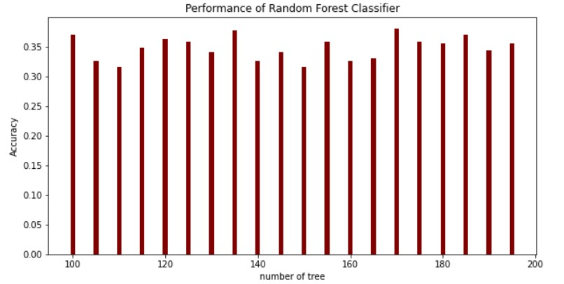The performance is slightly higher than 35%. One thing interesting here is that the performance fluctuate while we adding more tree into the forest.
Support Vector machine
Support Vector Machine are supervised learning model in which the hyperplane is built between the classes. The hyperplane is based on the vector constructed by the most outer samples in a optimization of margin between classes.

For SVM, we will get the classification report including precision, recall, f1-score and support.
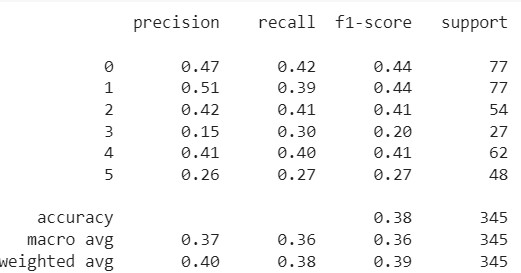Test performance
From all above models, we will use the test dataset to evaluate the performance
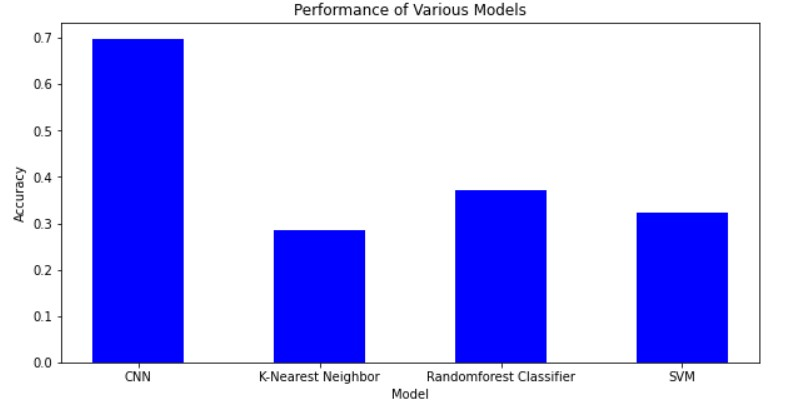As we can see in the figure, CNN outperform other models with the accuracy is almost 70%. Other model performance fluctuate between 30 and 40%. I also list out the pros and cons of each models as below:
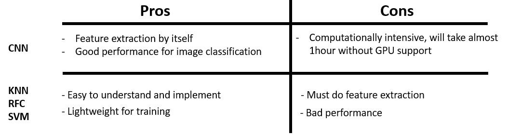Furthermore, KNN is computationally intensive for interference, but it is still not as much as CNN training phase. CNN also has more rooms for performance improvement such as hyperparameter tuning. While other are lack of rooms for improvement.
Conclusion
The blog has shown the implementation of various image classifier including dataset preparation and performance evalutation. We can conclude that Convolutional Neural Network outperforms other model and still has alot of promising ways for improvements. The code for this tutorial can be found here.
Challenges and Solution
I have been facing many challenges in this homework. Some of them have been solved but I could not make it for all of problems. The challenges and proposed solution are below:
Contribution
The Notebook have been developed by Tien Pham with no reference from tensorflow and sklearn examples (which is very time consuming to understand the theory, build the code , debug and try with different approach). My contributions are listed below:
References
[1]. Müller, Andreas C., and Sarah Guido. Introduction to machine learning with Python: a guide for data scientists. " O'Reilly Media, Inc.", 2016.
[2]. Schlegel, Daniel. "Deep machine learning on Gpu." University of Heidelber-Ziti 12 (2015).
[3]. TensorFlow.
[4]. Deng, Jia, et al. "Imagenet: A large-scale hierarchical image database." 2009 IEEE conference on computer vision and pattern recognition. Ieee, 2009.
[5]. Support Vector Machine — Introduction to Machine Learning Algorithms
[6]. What Is K-Nearest Neighbor? An ML Algorithm to Classify Data
[7]. Sklearn library.